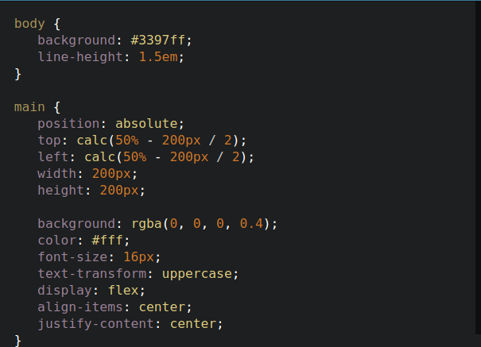

HTML
-
HTML (HyperText Markup Language) — это стандартный язык разметки
веб-страниц.
-
Используется для создания структуры веб-страниц с помощью тегов.
-
HTML-документ начинается с тега
<!DOCTYPE html> и
включает в себя теги <html>,
<head>, <body> и другие.
-
Теги, такие как
<h1>, <p>,
<a>, используются для создания заголовков, абзацев,
ссылок и других элементов.

CSS
-
CSS (Cascading Style Sheets) — это язык описания стилей для
HTML-документов.
-
С помощью CSS можно изменять внешний вид веб-страницы: шрифты, цвета,
отступы, расположение элементов и другие визуальные эффекты.
-
CSS-файл подключается через тег
<link> в разделе
<head> или через атрибут style в теге
HTML.
-
Селекторы CSS используются для выбора HTML-элементов и их стилизации.
Например,
p { color: red; } изменяет цвет текста в
абзацах на красный.

JavaScript
-
JavaScript — это язык программирования, который позволяет добавлять
динамическое поведение на веб-страницы.
-
JavaScript используется для создания интерактивных элементов, таких
как слайдеры, формы, анимации и обработка событий.
-
Скрипты JavaScript обычно встраиваются в HTML-документ с помощью тега
<script>.
-
JavaScript позволяет взаимодействовать с DOM (Document Object Model) и
изменять содержимое страницы без её перезагрузки.